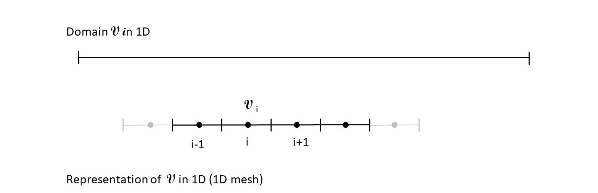

2. Mesh¶
2.1. Introduction¶
The domain \(\mathcal{V}\) is represented by a computationnal domain made of a representation of elementary volumes (cells) \(\mathcal{V}_i\) such as :
\(\mathcal{V}=\cup\mathcal{V}_i\).
Important
Here, only 1D or 2D structured meshes are considered: the number of neighbours of a cell is constant (2 in 1D, 4 in 2D) and the numbering of elementary volumes \(\mathcal{V}_i\) is ordered.
2.2. 1D Mesh¶
In 1D, the cells are usually numbered with index i.
Figure 2.1 : 1D mesh of a domain \(\mathcal{V}\) with its elementary volumes (cells) \(\mathcal{V}_i\)
{kind=link}
In 1D, to obtain a structured mesh one must have :
- The number of cells and the chosen numbering (index values of the 1rst and last cell): usually i is used for the x direction.
- The value of the volume, this is the length of each cell (constant or not) usually nammed \(\Delta x\)
2.3. 2D mesh¶
{kind=link}
Figure 2.2 : 2D Mesh of a domain \(\mathcal{V}\) in elementary volume \(\mathcal{V}_i\)
In 2D, to obtain a structured mesh one must have:
- The number of cells and the chosen numbering (index values of the 1rst and last cell in each direction): generally i is used for the x direction and j for the transverse direction.
- The value of the volume, this is the area of each cell, the surface of the boundary of the cell (face), this is the length of each of the 4 faces of the cell, and the exiting normal to every face \(\vec{n}_k\) , k being the number of the face, k is varying from 1 to 4.
{kind=link}
Figure 2.3 General quadrangle cell of a 2D mesh
Warning
For the code development (from 1D to 2D) the numbering of the faces is the same as the one depicted in Figure 2.3. Bottom face is number 1, then conterclockwise numbering.